Aviso de spoilers. Este detonado acompanha a campanha completa de The Sinking City 2: os códigos de cofres e comportas, os enigmas que bloqueiam o caminho, as dicas para os chefes e o final. Os nomes seguem a versão em português do jogo; os nomes em inglês aparecem entre parênteses quando ajudam a reconhecer placas e locais. As imagens são da gameplay do Bora de Play.
Como usar este detonado
Primeira partida. Siga os capítulos na ordem. As salas seguras têm baú, bancada e mesa de talentos; volte a elas antes de cada área nova. Guarde no baú o que não for usar logo, porque o inventário enche rápido. Sempre que encontrar uma caneta ativadora E.R.C., procure a caixa E.R.C. mais próxima: elas guardam melhorias de armas e de inventário.
Já está jogando? Procure na tabela o ponto em que você travou.
| Onde travei | Código ou solução | Ir para |
|---|---|---|
| Cofre do apartamento | 1908 | Um novo dia |
| Painel de fusíveis da comporta | I à esquerda, T em cima, L à direita | O painel da comporta |
| Comporta da igreja | 1672 | Igreja da Redenção |
| Obelisco e tridente | Símbolos na ordem do bilhete | O obelisco |
| Baleia bloqueando o caminho do hotel | Guindaste com combustível e engrenagem | Guindaste e baleia |
| Cofre do quarto do hotel | 2137 | Hotel Recife do Diabo |
| Painel de ventilação | 1 (2×), 2 (4×), 3 (2×), alavanca, 1 (1×) | Painel de ventilação |
| Cadeado do depósito do hospital | 1308 | Hospital Akeley |
| Aparelho dos cérebros | 13, 05, 36 | Aparelho de frequência |
| Cofre do vestiário do mercado | 1496 | Mercado de peixes |
| Cofre do escritório abandonado | 6294 | O passado do mercado |
| Shoggoth | Ative os três aparelhos e atire nos olhos | Chefe: Shoggoth |
| Chefe final | Atire na cabeça e limpe as invocações | Chefe final |
Rota da campanha
- Um novo dia
- Anexo da biblioteca e Corentin
- Igreja da Redenção
- Bombeiros, guindaste e baleia
- Oficina tipográfica
- Hotel Recife do Diabo
- Hospital Akeley
- Mercado de peixes e Shoggoth
- Cavernas, portal e final
1. Um novo dia
Objetivo: abrir a comporta e seguir de barco pela cidade alagada.
- Explore a casa, desça a escada até a rua e pegue o barco. Na primeira comporta, puxe a alavanca no prédio com a janela. O painel elétrico está sem fusíveis.
- A sala com o símbolo estranho na porta é a sala segura. O bilhete no balcão fala dos fusíveis.
- O cofre do apartamento pede o ano em que a loja vizinha abriu. A fachada da Allen Radio Store diz desde quando ela existe: o código é 1908. Na gameplay, a primeira tentativa foi subtrair anos de uma pista, mas a resposta é o ano direto da placa.
- Quebre os barris na frente do buraco no chão e desça. Abra o atalho do primeiro andar, entre na loja de eletricidade e pegue os fusíveis nas prateleiras do fundo.
O painel da comporta
Os fusíveis funcionam como conectores e precisam ligar fios da mesma cor. Encaixe o fusível em I à esquerda, o em T em cima e o em L à direita, girando cada peça até os fios se encontrarem. Depois siga de barco pelas outras comportas até o prédio vermelho.
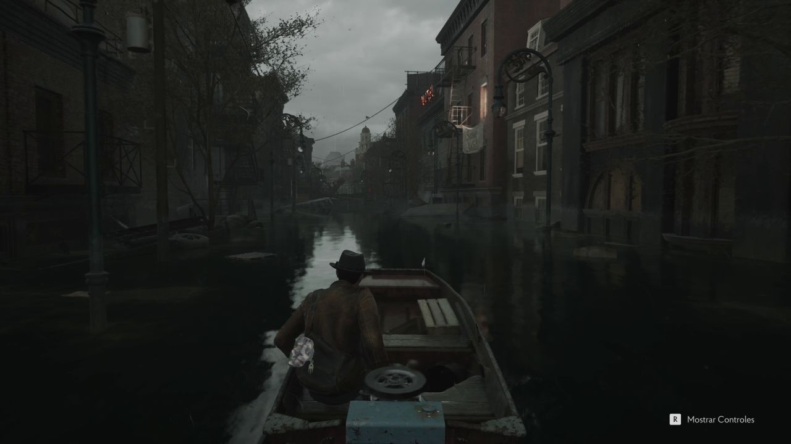
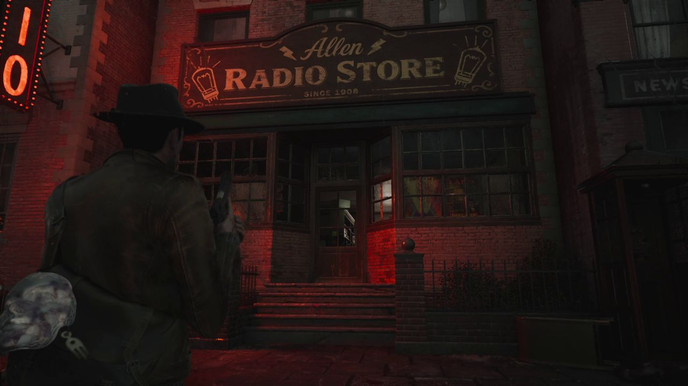
2. Anexo da biblioteca e Corentin
Objetivo: chegar à seção restrita e falar com Corentin.
- No anexo, use a primeira manivela para mover as estantes. Você cai no andar de baixo. Use a segunda manivela e depois a primeira de novo para chegar à seção restrita.
- Pegue o livro brilhante e afaste o armário da porta do fundo.
- Fale com Corentin. Pegue a caneta ativadora E.R.C. e abra a caixa E.R.C. do primeiro andar do anexo para melhorar a pistola. Volte a Corentin e saia pela janela.
3. Igreja da Redenção
Objetivo: libertar o tridente e devolvê-lo ao santuário.
- A alavanca da comporta da igreja pede o ano do sino. A igreja foi construída em 1667 e o sino levou mais meia década para ser feito e instalado. O código é 1672.
- Pegue a chave da igreja pelo caminho alagado à direita. A sala segura da igreja libera a mesa de talentos.
- Pegue a chave de estrela com o corpo, suba a escada da igreja e abra a porta do alto. Recolha o tridente e o bilhete da mesa.
O obelisco
- Coloque o tridente no obelisco. O bilhete da torre traz a ordem dos símbolos: insira-os nessa ordem e valide.
- Depois de validar, um raio atinge o obelisco. Afaste-se assim que confirmar.
- Pegue o tridente de volta e devolva-o ao encaixe na salinha da igreja.
- Nas criptas, use a chave de estrela numa porta e pegue a placa de impressão C. No altar, pegue a adaga da estátua e use-a no altar para descer o elevador. Derrote a criatura da boca estranha, suba e recolha a essência de sonho.
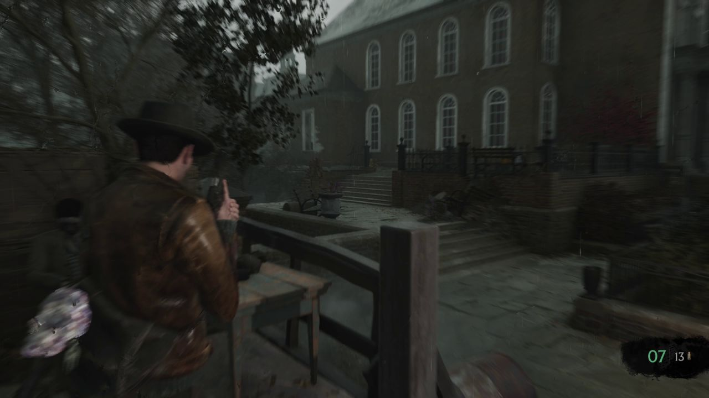
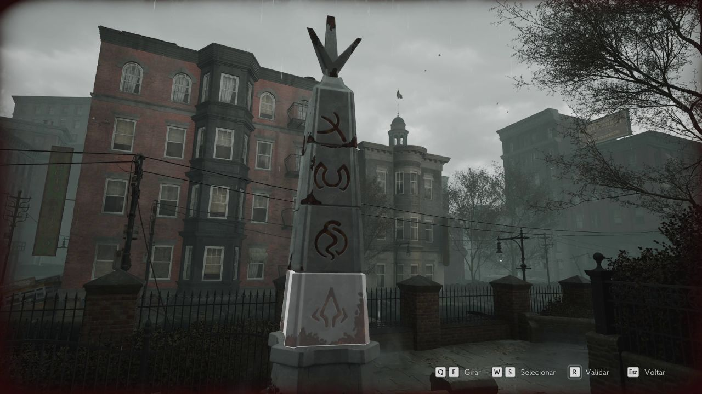
4. Bombeiros, guindaste e baleia
Objetivo: abastecer e consertar o guindaste para tirar a baleia do caminho do hotel.
- No Silver Eel, pegue o bilhete e a chave do cemitério no balcão. A sala segura ao lado tem rádio e espingarda.
- O guindaste está sem combustível e sem uma engrenagem. No corpo de bombeiros, o galão de gasolina do depósito fica atrás de uma poça eletrificada. Suba e puxe a alavanca de energia antes de pegar o galão. Ao sair, prepare-se para ondas de inimigos.
- A engrenagem de aço fica na oficina tipográfica (próximo capítulo), atrás da porta da luz vermelha. Volte ao guindaste com os dois itens.
- Abasteça o guindaste e instale a engrenagem. Mova o braço para a esquerda, prenda a garra vermelha da rua, levante, mova para a direita, solte e desça sobre a baleia para tirá-la do caminho.
5. Oficina tipográfica
Objetivo: reunir as três placas e imprimir.
- Suba pela plataforma, passe pela abertura e caia pelo piso. A placa A está numa salinha do prédio atrás da janela.
- A chave A.P.H. fica na parede perto de uma sala segura. Ela abre o portão do depósito e a porta da luz vermelha, no andar de baixo, onde está a engrenagem de aço. A caixa E.R.C. desse andar aumenta o inventário.
- No apartamento ao lado do corpo de bombeiros, aberto ao mover a garra vermelha, estão a placa B e outra caneta E.R.C.
- Com as placas A, B e C, use a impressora da sala secreta. Deixe todos os quadrados dourados para ganhar a coronha da espingarda, ou todos prateados para ganhar essência de sonho.
6. Hotel Recife do Diabo
Objetivo: abrir os três baús de Lorelai, destrancar o porão e levar Lorelai até Corentin.
- Suba pela escada vermelha até o bar. Abra as portas duplas para criar um atalho até o barco. O mapa está na parede da salinha.
- No quarto do terceiro andar, atrás do armário, o cofre usa o código 2137. As pistas do quarto falam em corações e pecados: são dois, um, três e sete. Dentro há melhoria de pistola e munição.
- Desça pelo buraco no piso do segundo andar. A chave dos funcionários está numa mesa. Ela abre a sala dos funcionários, onde ficam as fichas de Lorelai.
- Cada baú de Lorelai consome uma ficha e guarda uma chave. No baú do segundo andar, um ruído causa dano contínuo: destrua os quatro aparelhos (um deles no banheiro) antes de pegar a chave. O segundo baú fica no quarto 303 e o terceiro numa mesa do primeiro andar.
- No porão, use as três chaves na porta decorada com Lorelai.
O painel de ventilação
Na salinha do porão, alinhe os medidores apertando: botão 1 duas vezes, botão 2 quatro vezes, botão 3 duas vezes, puxe a alavanca e aperte o botão 1 mais uma vez. A submetralhadora fica na mesa ao lado da máquina.
Transferência de Lorelai. No meio da transferência para o barco, o mecanismo para. Puxe a alavanca com a luz vermelha. Um inimigo grande aparece: atire nas pernas até ele ajoelhar e depois nas bolhas das costas. Use a manivela do barco para baixar Lorelai, volte ao anexo e entregue-a a Corentin. No fim da cena, pegue a máscara na mesa.
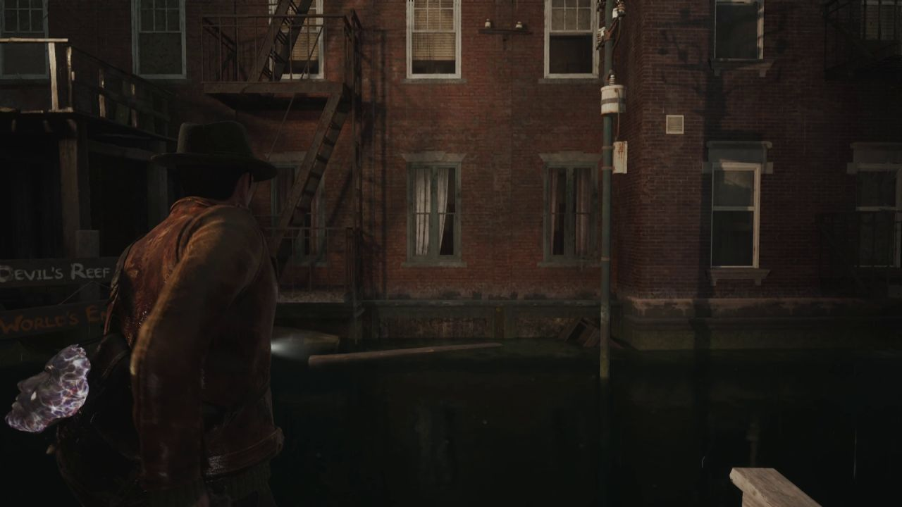
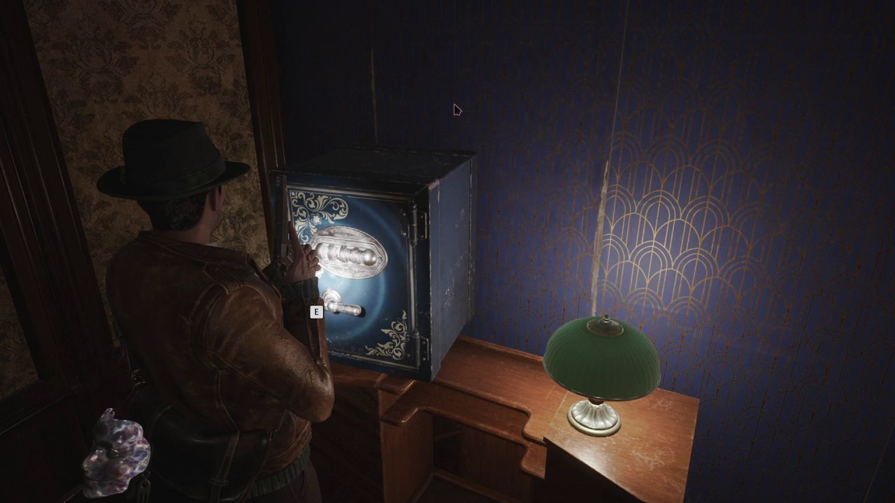
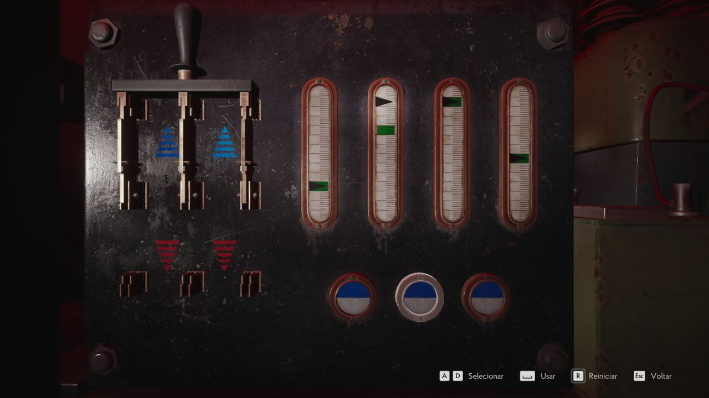
7. Hospital Akeley
Objetivo: carregar o Prisma nas três estações e chegar ao teatro anatômico.
- A sala segura fica à direita da entrada. Desça até a sala de tratamento e puxe a alavanca da salinha para tirar a proteção do aparelho diante da bolha vermelha. Pegue o Prisma e fuja pelo corredor da esquerda quando o alarme tocar.
- Uma criatura de tinta persegue você pelo hospital. Ela não morre: depois de levar dano suficiente some por um tempo. Evite-a sempre que puder.
- Carregue o Prisma nas três estações coloridas. Em cada uma, gire os três anéis até os símbolos certos formarem uma linha com o triângulo. Os símbolos ficam espalhados pelo hospital e aparecem na aba de investigação: a estação azul fica na sala de tratamento, a amarela na salinha da capela e a rosa na sala de manipulações.
Máscaras e chaves
| Item | Onde | Abre |
|---|---|---|
| Rosto de mulher | Recipiente da cabeça no necrotério | Porta da entrada e porta do fundo do necrotério |
| Rosto de idoso | Metades no recipiente da ala oeste e no consultório de órteses. Junte-as na oficina de próteses | Área do idoso e sala de materiais |
| Rosto do cirurgião-chefe | Mais adiante na campanha | Sala do cirurgião-chefe e passagem do necrotério ao teatro anatômico |
| Ácido antiferrugem | Sala do pôster, no andar de cima | Porta da escada central e porta do depósito |
| Chave do caduceu | Sacada da sala dos funcionários | Farmácia e porta perto do ambulatório |
O cadeado do depósito usa o código 1308, tirado dos documentos da área. Lá dentro há uma melhoria de submetralhadora.
O aparelho de frequência
Na sala do rádio, três cérebros em frascos dão as pistas das três frequências. Ajuste o aparelho para 13, 05 e 36. Ele solta essência de sonho.
Com o Prisma carregado, use-o no aparelho do teatro anatômico. No pátio terapêutico, um inimigo grande cospe veneno: atire no ponto vermelho do peito. Na sala de manutenção e na cerca final, segure as ondas de inimigos antes da cena do teatro.
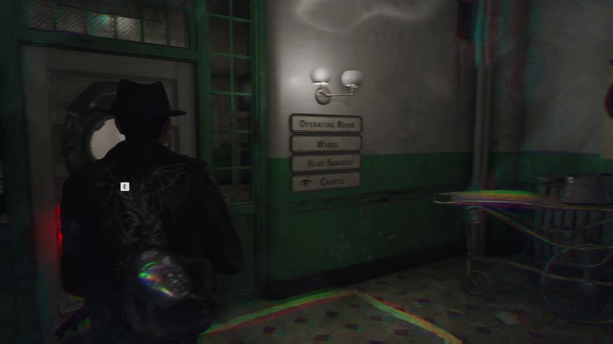
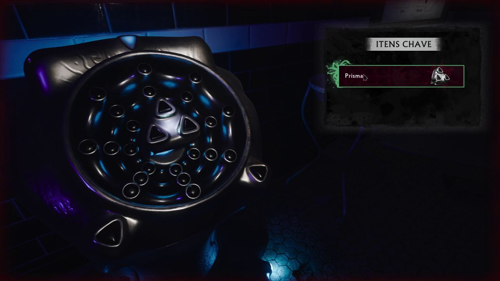
8. Mercado de peixes e Shoggoth
Objetivo: reunir as garrafas de Leiden e abrir caminho até o navio.
- Suba pela escada do mercado. A sala segura fica logo abaixo.
- Na balança do piso do mercado, pegue o cortador de parafusos. Corte as correntes da porta do piso e siga até a câmara frigorífica, onde estão a chave do olho de peixe e o bilhete da porta do floco de neve.
- As garrafas de Leiden abrem as portas com estrela-do-mar: coloque uma garrafa na estrela para liberar a passagem. A primeira está no canteiro de obras.
- A chave do floco de neve fica na parede da sala de leilões. Derrote o inimigo perigoso da sala antes de pegá-la.
- O cofre do vestiário usa 1496. A pista do último número parece 16, mas é 6. Dentro está a melhoria do lança-granadas.
- A porta do depósito de sal pede quatro algarismos romanos. Os guias consultados divergem sobre o terceiro; tente I, IV, IX, XVI e, se não abrir, I, IV, XI, XVI.
O passado do mercado
- Uma proteção bloqueia o escritório abandonado. Na pintura da câmara frigorífica, atire em Freddie, o segundo da direita, que não toca instrumento. Pegue a urna e use-a na proteção.
- Interaja com a garrafa de Leiden da mesa para entrar na lembrança e fale com os fantasmas do escritório e da loja antiga. O cofre do escritório usa 6294 e guarda outra garrafa.
- Use o coração de pedra na estátua estranha. Atire nos braços na ordem: pessoa ajoelhada (braço direito), polvo (alto à esquerda), estátua do Abissal (baixo à direita), ampulheta (esquerda) e garrafa de Leiden (baixo à esquerda). Pegue o coração de gelo.
- Use o coração de gelo na estátua congelada da câmara frigorífica para pegar a garrafa descarregada. Recarregue-a no aparelho do canteiro de obras, segurando as ondas de inimigos e religando os interruptores das luzes vermelhas.
- Coloque as três garrafas nas três estrelas-do-mar do porão do navio quebrado. Atire de longe nas bolhas, desça pelo porão até a sala segura no pé da escada e prepare-se para o chefe.
Chefe: Shoggoth
Atirar no corpo não resolve. Ative os três aparelhos estranhos da arena para o Shoggoth mostrar os olhos e atire neles. Repita: a cada rodada ele fica mais agressivo, então mantenha distância e priorize os aparelhos.
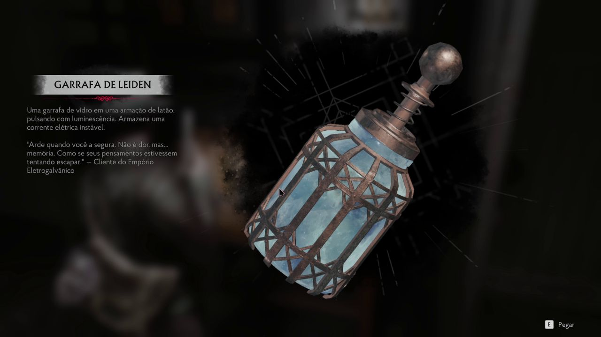
9. Cavernas, portal e final
Objetivo: atravessar o portal e enfrentar o chefe final.
- Atravesse as cavernas. Na porta estranha há um bilhete e, num caixote, a chave robusta.
- Na barraca grande, abra o baú marrom com a chave robusta e pegue a pedra sagitiforme. Use-a na porta estranha em frente à barraca.
- Passe pelo columbário até a sala do portal. Nas salas seguintes, recolha o casulo gravado e as canetas E.R.C. A cripta tem uma emboscada com muitos inimigos.
- Coloque o casulo no aparelho diante do portal, alinhe as peças de todos os lados e puxe a alavanca do gerador. Atravesse o portal, pegue o barco até o fim e reabasteça na área segura antes da grande porta.
Chefe final
Mire na cabeça com tudo o que tiver. O chefe invoca inimigos e faz ataques em área: desvie, elimine as invocações que chegarem perto e volte a atirar na cabeça. Depois da luta, caminhe com Faye até o altar para ver o final.
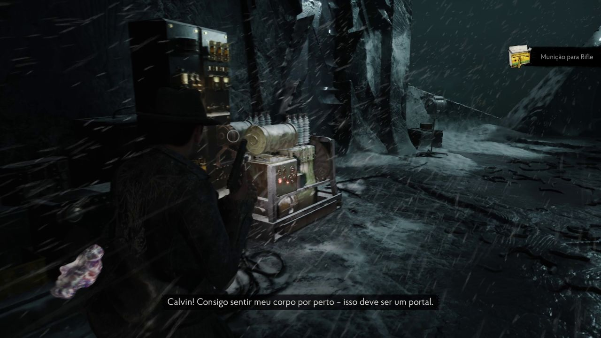
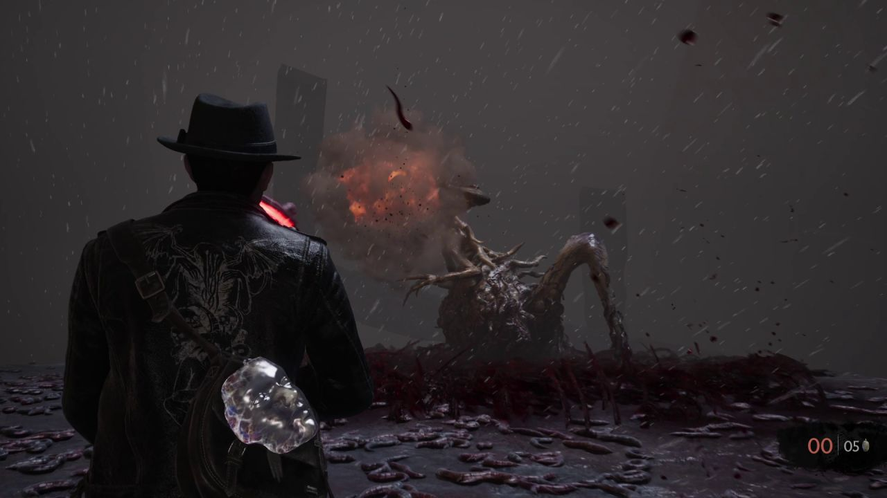
Quer entender a história completa? O canal tem um vídeo com a história e o final explicados ↗.
Referências de rota e códigos. Detonado completo — GameSpew, Códigos e enigmas — The Sinking City 2 Guides, Cofres e cadeados — GamerHour.
↑ Voltar ao topo